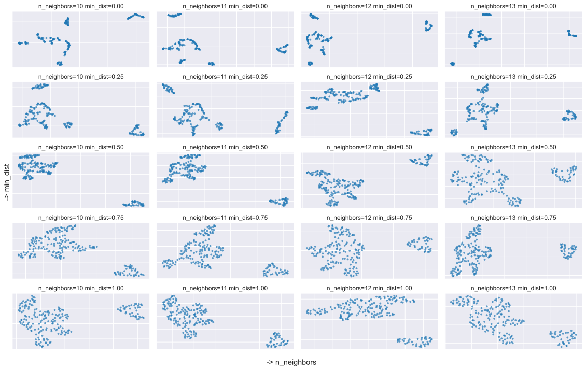
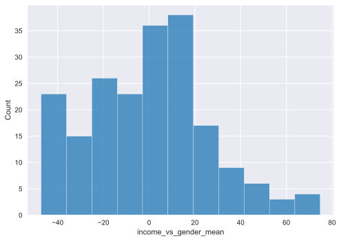
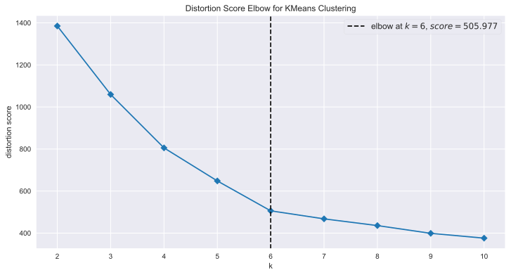

Unsupervised Learning -> Clustering algorithms are used for unsupervised learning, ideal for exploratory data analysis.
Grouping Data -> These algorithms group similar data into clusters based on specific criteria.
Variety of Applications -> They’re used in diverse fields like customer segmentation, anomaly detection, and more.
Different Techniques -> Various types exist, like K-means and DBSCAN, each with unique strengths and suited for specific data types.
Choice of Parameters -> The selection and tuning of parameters, like the number of clusters, significantly influence the results.
In the vast field of machine learning, clustering algorithms hold a pivotal role. Used as a form of unsupervised learning, they uncover hidden patterns and structures within unlabeled data, making them instrumental for exploratory data analysis. The essence of clustering algorithms lies in their ability to sift through unstructured data and bring together similar items, forming distinct groups or ‘clusters’ based on defined criteria.
These algorithms have found their place in a myriad of real-world applications. From customer segmentation in marketing strategies, to image segmentation in computer vision, anomaly detection in cybersecurity, and dimensionality reduction in high-dimensional data—clustering algorithms are at the heart of insightful data-driven decision making.
The world of clustering algorithms is diverse, housing various types such as K-means, hierarchical, DBSCAN, and Gaussian Mixture Models, each coming with its unique strengths, limitations, and suitability for certain types of data.
A crucial aspect of working with these algorithms is the specification of parameters. While some algorithms like K-means require the user to define the number of clusters in advance, others, like DBSCAN, determine the number of clusters based on the data itself. The choice and tuning of these parameters can significantly steer the algorithm’s effectiveness, making this a critical skill for any data practitioner.
In this blog post, we delve deeper into the intriguing world of clustering algorithms, demystifying their workings, exploring their varieties, and discussing how to choose and fine-tune parameters for optimal results. Stay tuned as we embark on this insightful journey.
In this initial stage, the goal is to prepare the data for analysis. This involves cleaning the data by removing or filling in missing values, which could be done through various strategies like dropping the missing rows, filling them with mean/median/mode, or using a prediction model. It’s also crucial to handle outliers and potentially normalize features if they’re on different scales. This stage might also involve dealing with categorical variables using encoding techniques. Effective preprocessing is crucial for reliable results in the subsequent stages.
Score assigned by the mall based on customer behavior and spending nature
Code
# importsimport matplotlib.pyplot as pltimport numpy as npimport pandas as pdimport seaborn as snsimport umapfrom matplotlib_inline.backend_inline import set_matplotlib_formatsfrom sklearn.cluster import KMeansfrom sklearn.decomposition import PCAfrom sklearn.preprocessing import power_transformfrom yellowbrick.cluster import kelbow_visualizer, silhouette_visualizer# setting global plotting settingsset_matplotlib_formats("svg")sns.set_palette("tab10")sns.set_style("darkgrid")FIGSIZE = (12, 6)
/opt/homebrew/Caskroom/miniconda/base/envs/hypershotgun/lib/python3.10/site-packages/tqdm/auto.py:21: TqdmWarning: IProgress not found. Please update jupyter and ipywidgets. See https://ipywidgets.readthedocs.io/en/stable/user_install.html
from .autonotebook import tqdm as notebook_tqdm
Code
# Load the customer dataset to analyze shopping patternsdf_mall = pd.read_csv("artifacts/Mall_Customers.csv")# rename columns to be lowercase, for easy typingdf_mall = df_mall.rename( columns={"CustomerID ": "id","Gender ": "gender","Age ": "age","Annual Income (k$) ": "income","Spending Score (1-100)": "spending", })df_mall["gender"] = df_mall["gender"].str.lower()df_mall["gender"] = df_mall["gender"].str.strip()# look at a random sample to validate the contentsdf_mall.sample(6)
id
gender
age
income
spending
35
36
female
21
33
81
148
149
female
34
78
22
157
158
female
30
78
78
21
22
male
25
24
73
10
11
male
67
19
14
8
9
male
64
19
3
Upon examination of the dataset, it appears that the ‘gender’ column is the only non-numeric feature. Specifically, it contains string values categorizing customers as either “Male” or “Female”. All other columns - ‘id’, ‘age’, ‘income’, and ‘spending’ - are numeric data types.
The ‘id’ column seems to be a unique identifier for each customer. While numeric, this feature has very high cardinality (a distinct value for every customer). Features with high cardinality tend to dominate distance calculations in clustering algorithms and obscure more meaningful patterns in the data. Therefore, we should exclude the customer ID column from the feature set used for clustering.
For the remaining features to function effectively in clustering algorithms, the input features generally need to be numeric rather than categorical strings. Distance-based algorithms like k-means rely on computing distances between data points across features. String categories do not have an inherent numeric ordering, so the distance computations would not be meaningful.
Additionally, when performing exploratory analysis, a numeric encoding often allows easier visualization of the impact of gender relative to the other numeric features. Box plots, scatter plots with color-coded points, and other techniques can provide better insights into how gender correlates with shopper age, income or spending habits when mapped to a numeric form.
Therefore, to enable the application of clustering algorithms and more impactful analysis, we need to process the ‘gender’ column by encoding the categories as numbers. Common encoding schemes include mapping “Male” and “Female” to 1 and 0 respectively, or using one-hot encoding to create an additional binary feature column for each category. After encoding, gender will be represented numerically like the other existing features.
In summary, as gender is the only non-numeric column, and ID has high cardinality unsuitable for clustering, effectively preparing the data requires encoding the gender categorical data and excluding the customer ID column.
Code
df_mall.describe().round(1)
id
age
income
spending
count
200.0
200.0
200.0
200.0
mean
100.5
38.8
60.6
50.2
std
57.9
14.0
26.3
25.8
min
1.0
18.0
15.0
1.0
25%
50.8
28.8
41.5
34.8
50%
100.5
36.0
61.5
50.0
75%
150.2
49.0
78.0
73.0
max
200.0
70.0
137.0
99.0
The dataset contains 200 records, for each of the variables - id, age, income, and spending.
id: This is the unique identifier for each customer. It ranges from 1 to 200 with an average (mean) value of 100.5. The standard deviation is approximately 57.9, indicating that the id values are spread out over a large range.
age: The average age of the customers in the dataset is 38.8 years. The age ranges from a minimum of 18 years to a maximum of 70 years, with a standard deviation of 14. This suggests that the mall has a diverse age range of customers, and the majority of them are middle-aged.
income: The average annual income of the customers is approximately $60.6 thousand. It has a standard deviation of 26.3, indicating a considerable variation in the incomes of the customers. The minimum income is $15 thousand, while the maximum is $137 thousand. This suggests a wide spread of customers from different income levels.
spending: The average spending score assigned by the mall is about 50.2. The spending score ranges from a minimum of 1 to a maximum of 99, with a standard deviation of 25.8. This suggests a broad spectrum of customer spending behaviors, from low spenders to high spenders.
The 25%, 50%, and 75% rows represent the corresponding percentiles for each variable:
For age, 25% of the customers are 28.8 years or younger, 50% (which is also the median) are 36 years or younger, and 75% are 49 years or younger. For income, 25% of the customers earn $41.5 thousand or less, 50% earn $61.5 thousand or less, and 75% earn $78 thousand or less. For spending, 25% of the customers have a spending score of 34.8 or less, 50% have a score of 50 or less, and 75% have a score of 73 or less.
Code
# convert gender to a numerical value via one-hot-encoding# clustering models usally need numerical valuesdf_mall = pd.get_dummies(df_mall, columns=["gender"], drop_first=True)# list with features for easy referencefeatures = ["age", "income", "spending", "gender_male"]df_feature = df_mall[features]# look at a random sample to validate the contentsdf_feature.sample(5)
count mean std min 25% 50% 75% max
age 200.0 38.85 13.969007 18.0 28.75 36.0 49.0 70.0
income 200.0 60.56 26.264721 15.0 41.50 61.5 78.0 137.0
spending 200.0 50.20 25.823522 1.0 34.75 50.0 73.0 99.0
The dataset contains information 200 customers. The average (mean) age is 38.85 years. Ages range from 18 to 70, with 50% of customers aged 36 years or below.
The average annual income is $60,560, ranging from $15,000 to $137,000. 50% of customers earn $61,500 or less.
For the spending score (1-100), the average is 50.2. Half the customers have a spending score of 50 or below. The minimum is 1 and maximum 99, showing a wide range in spending habits.
Overall, we see variation among customers in age, income levels, and purchasing patterns. Clustering algorithms can help segment customers into groups based on these attributes to develop targeted marketing approaches. let us first look at the distributions of the features.
# create a ratio between income and spendingdf_ratio = df_feature.assign(si_ratio=df_feature["income"] / df_feature["spending"])fig, ax = plt.subplots(1, 2, figsize=FIGSIZE)curr_ax = ax[0]sns.scatterplot( data=df_ratio, x="si_ratio", y="age", ax=curr_ax,)# clip to 95% quantile of the si ratio,# this will zoom into the interesting part of the plotdf_ratio = df_ratio.assign( si_ratio_clip=df_ratio["si_ratio"].clip( upper=np.quantile(df_ratio["si_ratio"], 0.95) ))curr_ax = ax[1]sns.scatterplot( data=df_ratio, x="si_ratio_clip", y="age", ax=curr_ax,)
def calc_umap( df_in: pd.DataFrame, n_neighbors=15, min_dist=0.15, n_components=2,):# data structure, with the goal of a 2D representation. reducer = umap.UMAP( n_neighbors=n_neighbors, n_components=n_components, min_dist=min_dist, metric="euclidean", random_state=42, n_jobs=1, # setting to 1 to lock in the random state )# fit the data to the reducerreturn reducer.fit_transform(df_in)def plot_umap(embeddings: np.array =None, ax: plt.axes =None):# create the scatter plot of the 2 component embedding# the order of x,y doesnt matter, the relative distance does ax.scatter(x=embeddings[:, 0], y=embeddings[:, 1], s=12, alpha=0.7)# remove axis labels and ticks# as these are meaningless for umap ax.set_xticklabels([]) ax.set_yticklabels([])# n_neighbors are formatted as floats and min_dist are formatted as int ax.set_title(f"{n_neighbors=:.0f}{min_dist=:.2f}")
Code
# defining the parameter sweeprange_min_dist = np.linspace(0, 1, 5) # min_distrange_n_neighbors = np.arange(10, 14) # n_neighbors# creating the subplots and performing the embedding with the parameter sweepfig, ax = plt.subplots( nrows=len(range_min_dist), ncols=len(range_n_neighbors), figsize=(16, 10))for i_min_dist, min_dist inenumerate(range_min_dist):for i_n_neighbors, n_neighbors inenumerate(range_n_neighbors): embeddings = calc_umap( df_in=df_feature, n_neighbors=int(n_neighbors), min_dist=float(min_dist), ) plot_umap(embeddings=embeddings, ax=ax[i_min_dist, i_n_neighbors])fig.supxlabel(" -> n_neighbors")fig.supylabel(" -> min_dist")fig.tight_layout()plt.show()

4 Feature Engineering
Based on your EDA, create features that might help define customer segmentation, such as total purchase value, average purchase size, frequency of purchase, etc.
create bins for the age bracket
calculate descriptive stats for each bracket i.e mean spending size, income
ratio of income of spending
normalization of variables -> make comment on the distance calculations
Code
# bin the age variable into 7 bins# fmt: offbinned = pd.cut( df_feature["age"], bins=[0, 20, 30, 40, 50, 60, 70, 80], labels=[1,2,3,4,5,6,7], )# fmt: ondf_feature = df_feature.assign(age_bin=binned)df_feature.sample(10)
age
income
spending
gender_male
age_bin
115
19
65
50
False
1
107
54
63
46
True
5
52
31
43
54
False
3
77
40
54
48
True
3
125
31
70
77
False
3
189
36
103
85
False
3
138
19
74
10
True
1
143
32
76
87
False
3
136
44
73
7
False
4
81
38
54
55
True
3
Code
# calculate the ratio between# spending and income -> how much of the income do you spend# spending and age -> if you are older do you spend more or lessdf_feature = df_feature.assign( si_ratio=df_feature["income"] / df_feature["spending"], sa_ratio=df_feature["age"] / df_feature["spending"],)df_feature.sample(10)
age
income
spending
gender_male
age_bin
si_ratio
sa_ratio
8
64
19
3
True
6
6.333333
21.333333
57
69
44
46
True
6
0.956522
1.500000
62
67
47
52
False
6
0.903846
1.288462
100
23
62
41
False
2
1.512195
0.560976
134
20
73
5
True
1
14.600000
4.000000
60
70
46
56
True
6
0.821429
1.250000
45
24
39
65
False
2
0.600000
0.369231
16
35
21
35
False
3
0.600000
1.000000
155
27
78
89
False
2
0.876404
0.303371
21
25
24
73
True
2
0.328767
0.342466
Code
# turn off the formatter, to increase readability# fmt: off# create a new column with the difference between income and the mean income of the gender groupdf_feature = df_feature.assign(# create a new column with the difference between income and the mean income of the gender group income_vs_gender_mean=df_feature['income'] - df_feature.groupby("gender_male",)[["income",]].transform("mean").iloc[:, 0], spending_vs_gender_mean=df_feature["spending"] - df_feature.groupby("gender_male")[["spending",]].transform("mean").iloc[:, 0],# create a new column with the difference between income and the mean income of the age group income_vs_age_mean=df_feature["income"] - df_feature.groupby("age_bin",observed=False)[["income",]].transform("mean").iloc[:, 0], spending_vs_age_mean=df_feature["spending"] - df_feature.groupby("age_bin",observed=False)[["spending",]].transform("mean").iloc[:, 0],)# fmt: ondf_feature.sample(10)
age
income
spending
gender_male
age_bin
si_ratio
sa_ratio
income_vs_gender_mean
spending_vs_gender_mean
income_vs_age_mean
spending_vs_age_mean
125
31
70
77
False
3
0.909091
0.402597
10.750000
25.473214
1.366667
19.500000
107
54
63
46
True
5
1.369565
1.173913
0.772727
-2.511364
6.304348
13.478261
184
41
99
39
False
4
2.538462
1.051282
39.750000
-12.526786
35.394737
4.605263
160
56
79
35
False
5
2.257143
1.600000
19.750000
-16.526786
22.304348
2.478261
191
32
103
69
False
3
1.492754
0.463768
43.750000
17.473214
34.366667
11.500000
75
26
54
54
True
2
1.000000
0.481481
-8.227273
5.488636
-2.755556
-13.222222
156
37
78
1
True
3
78.000000
37.000000
15.772727
-47.511364
9.366667
-56.500000
27
35
28
61
True
3
0.459016
0.573770
-34.227273
12.488636
-40.633333
3.500000
37
30
34
73
False
2
0.465753
0.410959
-25.250000
21.473214
-22.755556
5.777778
78
23
54
52
False
2
1.038462
0.442308
-5.250000
0.473214
-2.755556
-15.222222
Code
# apply power transform# sns.histplot(df_feature['age'])sns.histplot(df_feature["income_vs_gender_mean"])# sns.histplot(df_feature['age'])# sns.histplot(df_feature['age'])# sns.histplot(df_feature['age'])

Code
# casting values to integer in order for scaling later ondf_feature = df_feature.assign( age_bin=df_feature["age_bin"].astype(int),)df_feature[df_feature.select_dtypes(include="number").columns] = power_transform( X=df_feature[df_feature.select_dtypes(include="number").columns], method="yeo-johnson",)df_feature.sample(10)
age
income
spending
gender_male
age_bin
si_ratio
sa_ratio
income_vs_gender_mean
spending_vs_gender_mean
income_vs_age_mean
spending_vs_age_mean
121
0.091408
0.315793
-0.346103
False
-0.113303
0.410752
0.171627
0.334914
-0.448683
-0.057930
-0.830815
13
-1.131234
-1.703543
1.023549
False
-0.918216
-1.981503
-1.239494
-1.560981
0.990713
-1.456576
0.348714
180
0.018057
1.326551
-0.664338
False
-0.113303
1.090172
0.424146
1.404470
-0.759482
1.116249
-1.113231
137
-0.376090
0.528911
0.881491
True
-0.113303
-0.291252
-0.840743
0.444649
0.952382
0.178255
0.669853
81
0.091408
-0.170436
0.225966
True
-0.113303
-0.317090
-0.250975
-0.279316
0.251737
-0.574370
-0.265329
191
-0.376090
1.514638
0.738221
False
-0.113303
0.260205
-0.770467
1.615155
0.679276
1.350185
0.444178
77
0.233319
-0.170436
-0.037540
True
-0.113303
-0.126075
-0.001269
-0.279316
-0.020591
-0.574370
-0.537953
99
-1.591912
0.095898
0.000449
True
-1.892399
0.014376
-0.928139
0.000060
0.018297
0.394320
0.057231
130
0.686612
0.458577
-1.669978
True
0.585358
1.787960
1.741536
0.372130
-1.535716
0.296935
-1.109565
4
-0.461118
-1.872032
-0.346103
False
-0.113303
-1.444914
-0.097838
-1.686685
-0.448683
-2.050982
-0.830815
Code
df_feature.describe().T
count
mean
std
min
25%
50%
75%
max
age
200.0
7.016610e-16
1.002509
-1.851739
-0.661494
-0.056996
0.805504
1.852811
income
200.0
-5.684342e-16
1.002509
-1.989930
-0.678427
0.114476
0.701866
2.515898
spending
200.0
3.552714e-17
1.002509
-2.100163
-0.553723
0.038318
0.881491
1.786065
age_bin
200.0
5.462297e-16
1.002509
-1.892399
-0.918216
-0.113303
0.585358
1.777954
si_ratio
200.0
4.263256e-16
1.002509
-2.274854
-0.463817
-0.124667
0.335556
2.253114
sa_ratio
200.0
-2.575717e-16
1.002509
-1.693664
-0.914656
0.032022
0.665247
2.116408
income_vs_gender_mean
200.0
-7.105427e-17
1.002509
-1.895689
-0.729683
0.076205
0.633519
2.695342
spending_vs_gender_mean
200.0
-5.329071e-17
1.002509
-1.846407
-0.652651
-0.020890
0.834990
1.886854
income_vs_age_mean
200.0
-7.105427e-17
1.002509
-2.050982
-0.719487
0.040759
0.596834
3.135560
spending_vs_age_mean
200.0
-3.108624e-17
1.002509
-2.155238
-0.827041
0.063810
0.678319
2.582476
5 Clustering
Use a suitable clustering algorithm (like K-means or hierarchical clustering) to divide customers into distinct groups.
Code
fig, ax = plt.subplots(figsize=FIGSIZE)_ = kelbow_visualizer( KMeans(n_init=10), X=df_feature, timings=False, metric="distortion", ax=ax,) # distortion: mean sum of squared distances to centers

Code
# fit kmeans for various number of clusterskmeans_clusters = [ KMeans(n_clusters=i, n_init="auto", max_iter=900) for i inrange(2, 11)]
/var/folders/q6/pntlsv6s1j19xm8fhz9g32fr0000gn/T/ipykernel_28168/1231921934.py:12: UserWarning: The figure layout has changed to tight
plt.tight_layout()
/var/folders/q6/pntlsv6s1j19xm8fhz9g32fr0000gn/T/ipykernel_28168/1685628906.py:6: UserWarning: The palette list has more values (10) than needed (6), which may not be intended.
sns.scatterplot(
Analyze each customer group’s traits, like average age or buying habits. Use metrics like Silhouette Score or Dunn Index to assess clustering quality, evaluating cluster cohesion and separation. A successful clustering result scores well on these metrics and provides actionable business insights.
Explain how the results could be used to tailor marketing strategies towards each segment for improved customer engagement and retention.
Code
# add the cluster labels to the dataframedf_mall_cluster_centroid = df_mall_cluster.merge( df_cluster_agg.drop(columns=["count"]), on="cluster", suffixes=("", "_cluster"))
Code
def create_blend(df_in: pd.DataFrame, col1: str, steps: int):""" Applies a function that generates a linear sequence between the value of a specified column and the corresponding cluster value in each row of the dataframe. Parameters ---------- df_in : pd.DataFrame Input dataframe with at least two columns: one specified by `col1` and another with `col1` suffix '_cluster'. col1 : str The name of the column in the dataframe from which to start the linear sequence. steps : int The number of steps in the linear sequence. Returns ------- pd.DataFrame A dataframe with each cell containing a linear sequence between the corresponding cell in `col1` and `col1_cluster`. """return df_in.apply(lambda row: np.linspace(row[col1], row[f"{col1}_cluster"], steps), axis=1 )# add the blend columns to the three variables of interestdf_mall_cluster_centroid = df_mall_cluster_centroid.assign( spending_blend=create_blend(df_mall_cluster_centroid, "spending", 50), age_blend=create_blend(df_mall_cluster_centroid, "age", 50), income_blend=create_blend(df_mall_cluster_centroid, "income", 50),)df_mall_cluster_centroid
freeze_frames =10# create the animationframes = [plot_step(i, overal_xlim, overal_ylim) for i inrange(50)]# freeze on the bounce pointframes.extend([frames[-1] for _ inrange(freeze_frames //6)])# add the the original series in reverseframes.extend(frames[::-1])gif.save(frames, "artifacts/clumper.gif", duration=0.05)